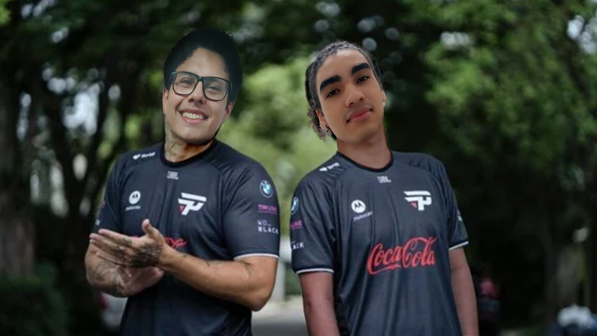

Dê um play em um de nossos games!
-

Somos Breno “Baratta” Ferreira e José Pedro “The Feeder” Cândido, dois ex-pro players de League of Legends pelo time da Pain Gaming, amantes dos videogames, apostamos todas nossas fichas com o Mega Gamers, a empresa de Gaming Developers que evoluir o futuro dos games!
Não perca tempo!
Venha já conhecer nosso Portfólio!